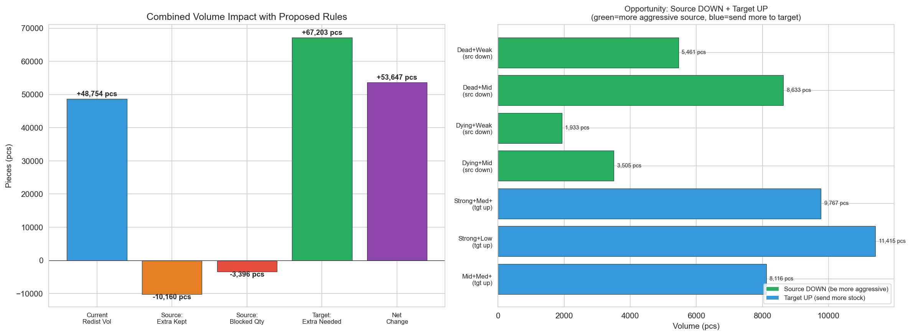
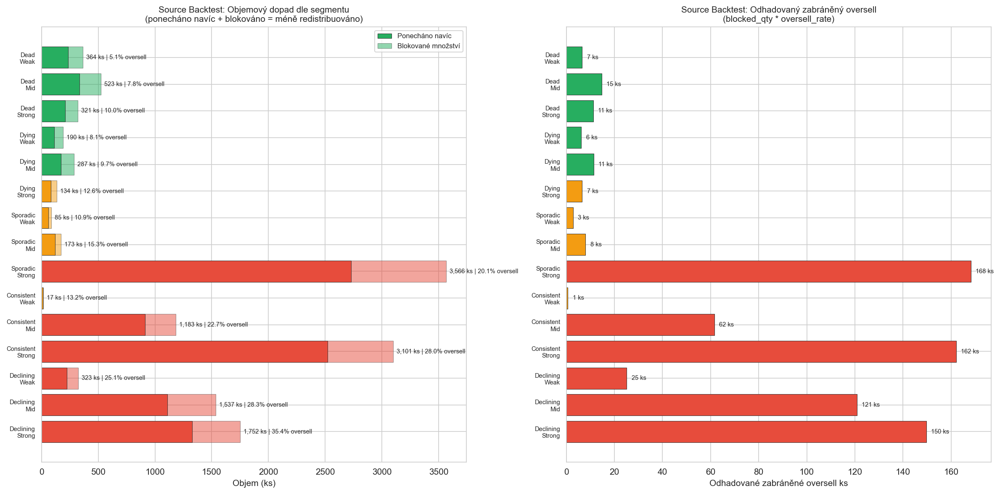
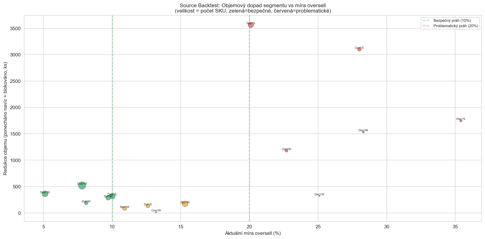

Backtest: Impact of Proposed Rules
CalculationId=233 | Date: 2025-07-13 | Generated: 2026-03-22 10:29
This report shows expected impact of rules from
Report 2: Decision Tree on redistribution volumes and oversell.
All metrics are in pieces (pcs), not just SKU count.
1. Volume Impact Overview
48,754 pcs
Current redistrib. volume
-10,160 pcs
Extra kept at source
-3,396 pcs
Blocked qty (not redistributed)
+67,203 pcs
Extra needed at target
+53,647 pcs
Net volume change

2. Source Backtest: Volume Impact per Segment
For each segment (Pattern x Store) we show volume changes in pieces:
- Current Qty = current redistribution volume in pcs
- Extra Kept = additional pcs staying at source (higher ML = take less)
- Blocked SKU = SKU that would NOT be redistributed at all
- Blocked Qty = pcs that would NOT be redistributed
- Oversell Qty = current oversell in pcs
- Volume Reduction = extra kept + blocked qty (total pcs less redistributed)
- Oversell Prevented = estimated pcs of oversell prevented

| Pattern | Store | SKU | Current Qty | Extra Kept |
Blocked SKU | Blocked Qty | Oversell Qty | Oversell % |
Volume Reduction | Oversell Prevented |
|---|
| Dead | Weak | 4,597 | 5,461 | 235 | 129 | 129 | 251 | 5.1% | 364 | 7 |
| Dead | Mid | 6,967 | 8,633 | 334 | 189 | 189 | 607 | 7.8% | 523 | 15 |
| Dead | Strong | 4,061 | 5,143 | 209 | 112 | 112 | 486 | 10.0% | 321 | 11 |
| Dying | Weak | 1,594 | 1,933 | 113 | 77 | 77 | 135 | 8.1% | 190 | 6 |
| Dying | Mid | 2,882 | 3,505 | 170 | 117 | 117 | 302 | 9.7% | 287 | 11 |
| Dying | Strong | 1,951 | 2,373 | 82 | 52 | 52 | 260 | 12.6% | 134 | 7 |
| Sporadic | Weak | 2,003 | 2,606 | 59 | 26 | 26 | 252 | 10.9% | 85 | 3 |
| Sporadic | Mid | 4,176 | 5,783 | 121 | 52 | 52 | 777 | 15.3% | 173 | 8 |
| Sporadic | Strong | 3,712 | 5,705 | 2,729 | 835 | 837 | 929 | 20.1% | 3,566 | 168 |
| Consistent | Weak | 431 | 641 | 12 | 5 | 5 | 63 | 13.2% | 17 | 1 |
| Consistent | Mid | 1,164 | 1,877 | 912 | 271 | 271 | 316 | 22.7% | 1,183 | 62 |
| Consistent | Strong | 1,693 | 2,898 | 2,522 | 535 | 579 | 608 | 28.0% | 3,101 | 162 |
| Declining | Weak | 219 | 294 | 223 | 99 | 100 | 74 | 25.1% | 323 | 25 |
| Declining | Mid | 569 | 781 | 1,110 | 383 | 427 | 190 | 28.3% | 1,537 | 121 |
| Declining | Strong | 751 | 1,121 | 1,329 | 387 | 423 | 328 | 35.4% | 1,752 | 150 |
| TOTAL | 36,770 | 48,754 |
10,160 | 3,269 | 3,396 |
5,578 | - |
13,556 | 756 |

Interpretation:
- 3,269 SKU would not be redistributed (blocked by higher ML).
- 3,396 pcs would not leave source stores.
- 10,160 pcs would additionally stay at source (less taken from redistributed SKU).
- 13,556 pcs total reduction in redistribution volume.
- ~756 pcs of oversell estimated to be prevented.
Targeted impact: The largest volume reductions are in Sporadic+Strong (3,566 pcs)
and Consistent+Strong (3,101 pcs) - exactly the segments with oversell >20%.
Dead+Weak/Mid segments (oversell <10%) have minimal volume reduction.
3. Target Backtest: Extra pcs for "1 Remains" Goal
For each target segment (ML x Store) we show volume metrics:
- All-sold % = SUCCESS (green) - product sold entirely, but nothing remains. Send more next time!
- Nothing-sold % = PROBLEM (red) - product didn't sell at all. Send less next time!
- Received / Sold qty - actual volume in pcs
- Sell-through ratio = sold / received (>1.0 means more sold than received = existing stock also sold)
- Extra Needed (pcs) = how many more pcs should be sent so 1 remains after sales

| ML | Store | SKU | All-sold % | Nothing % |
Received | Sold | ST Ratio |
Extra Needed (pcs) | Avg Extra/target |
|---|
| ML1 | Weak | 847 | 51.7% | 47.1% | 876 | 642 | 0.73x | 620 | 1.42 |
| ML1 | Mid | 2,095 | 58.4% | 39.8% | 2,181 | 1,912 | 0.88x | 1,844 | 1.51 |
| ML1 | Strong | 1,788 | 65.6% | 33.3% | 1,826 | 2,128 | 1.17x | 2,098 | 1.79 |
| ML2 | Weak | 4,418 | 49.6% | 27.3% | 4,952 | 7,470 | 1.51x | 4,585 | 2.09 |
| ML2 | Mid | 12,793 | 53.1% | 23.7% | 14,146 | 23,984 | 1.70x | 15,207 | 2.24 |
| ML2 | Strong | 14,766 | 61.8% | 17.6% | 16,140 | 33,950 | 2.10x | 22,934 | 2.51 |
| ML3 | Weak | 504 | 76.4% | 5.2% | 1,039 | 2,967 | 2.86x | 1,918 | 4.98 |
| ML3 | Mid | 1,866 | 77.8% | 4.6% | 3,558 | 10,990 | 3.09x | 7,196 | 4.96 |
| ML3 | Strong | 2,554 | 81.4% | 3.8% | 4,036 | 15,226 | 3.77x | 10,801 | 5.19 |
| TOTAL | 41,631 |
- | - | 48,754 | 99,269 | - |
67,203 | - |
"Extra needed" logic: If target sells everything (all-sold), we need to send MORE so 1 remains.
E.g., ML3 Strong: 81.4% all-sold, each target needs avg 5.19 extra pcs. By raising ML from 3 to 4-5,
we send more pieces and increase the chance that 1 piece remains after sales.
Where more volume should flow:
- ML3 Strong: 81.4% all-sold, sell-through 3.8x, needs 10,801 extra pcs
- ML3 Mid: 77.8% all-sold, needs 7,196 extra pcs
- ML2 Strong: 61.8% all-sold, needs 22,934 extra pcs
These are the BEST-performing targets. Increasing their ML brings the most value.
4. Combined: Source DOWN + Target UP Opportunities
Some segments allow being MORE aggressive on BOTH sides simultaneously:
| Source segment | Current oversell | Proposed ML | Volume freed (pcs) |
|---|
| Dead+Weak (src down) | 5.1% | 0* (was 1) | 5,461 |
| Dead+Mid (src down) | 7.8% | 0* (was 1) | 8,633 |
| Dying+Weak (src down) | 8.1% | 0* (was 1) | 1,933 |
| Dying+Mid (src down) | 9.7% | 0* (was 1) | 3,505 |
| Source DOWN total | | | 19,532 pcs potentially freed |
| Target segment | All-sold % | Proposed ML | Extra needed (pcs) |
|---|
| Strong+Med+ (tgt up) | 74.7% | 4 | 10,801 |
| Strong+Low (tgt up) | 57.1% | 3 | 22,934 |
| Mid+Med+ (tgt up) | 69.3% | 3 | 7,196 |
| Target UP total | | | 40,931 pcs extra needed |
Key synergy: Volume freed from source DOWN segments (~19,532 pcs from Dead/Dying on weak/mid stores)
can flow to target UP segments (~40,931 pcs needed at strong/mid stores with high sell-through).
The supply from source DOWN covers roughly half of the extra target demand - a balanced reallocation.
4.1 Where NOT to be aggressive
| Segment | Oversell / Nothing-sold | Action |
|---|
| Declining+Strong (source) | 35.4% oversell | ML UP to 3 (keep more) |
| Consistent+Strong (source) | 28.0% oversell | ML UP to 3 (keep more) |
| Weak+Zero (target) | 43.7% nothing-sold | ML DOWN to 1 (send less) |
| Weak+Low (target) | 34.6% nothing-sold | ML DOWN to 1 (send less) |
5. Backtest Summary
| Metric | Source side | Target side | Combined |
|---|
| Volume change | -13,556 pcs less sent |
+67,203 pcs more needed |
+53,647 pcs net |
| SKU affected (blocks) | 3,269 blocked | - | - |
| Oversell impact | ~756 pcs prevented | - | Better source protection |
| Strategy | More defensive for Declining/Consistent, more aggressive for Dead/Dying |
More stock for strong stores, less for weak | Balanced reallocation |
Final assessment:
- Source rules are BALANCED - they raise ML for 6 problematic segments AND lower ML for 4 safe segments.
- Target rules increase volume to stores that sell well (strong stores, med+ sales, strong brand-fit).
- Target rules decrease volume to stores where goods don't sell (weak stores, zero/low sales, weak brand-fit).
- Combined: smarter redistribution - less oversell at source, better sell-through at target.
- Dead and Dying segments (22,000+ SKU, 43% of total) remain at ML=0*/1 - conservative and safe.
Generated: 2026-03-22 10:29 | CalculationId=233 | EntityListId=3 |
See Report 1: Findings for full analytics,
Report 2: Decision Tree for rules.